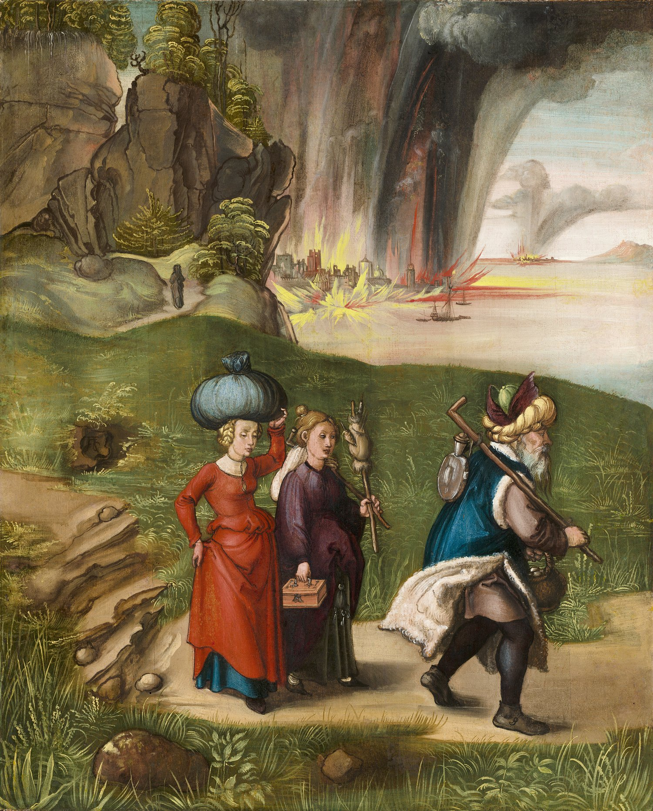

2 Peter 2 — The Mister Translation

⚠ Lot walking away from the burning cities with his daughters, his wife a small figure left behind on the hill path, the scene behind verses 6–7, ‘reducing the cities of Sodom and Gomorrah to ashes … and rescued righteous Lot.’ Painted on the back of a Madonna panel.
,_c._1496-1499,_NGA_41599.jpg){kind=link}
Translator’s Notes
“But false prophets also arose among the people, just as there will also be false teachers among you.” The chapter turns on the last words of chapter 1: “men, carried along by the Holy Spirit, spoke from God” (2 Peter 1:21), but not every prophet in Israel did. “The people” is Israel, and the Law names the false prophet at Deuteronomy 18:20, “the prophet who presumes to speak a word in my name that I did not command him to speak.” Jesus warns of false prophets at Matthew 7:15 and Mark 13:22. Pseudodidaskalos, “false teacher,” stands in one verse (dictionary). The long middle of this chapter runs close to Jude 1:4–18, often clause by clause, and the notes below set the two side by side.
“Who will secretly bring in factions of destruction, even denying the Master who bought them, bringing swift destruction upon themselves.” Pareisagō, “secretly bring in,” stands in one verse; its adjective is the “false brothers smuggled in” of Galatians 2:4. “Factions” is haireseis, the “factions” of 1 Corinthians 11:19 and Galatians 5:20 and the “party” of Acts 24:14 (dictionary); English “heresy” comes from this word, and here, with “of destruction,” it has the sense the English word later took. “Destruction,” apōleia, comes twice in this verse and again in verse 3 (dictionary). “The Master” is despotēs, as in “deny our only Master and Lord, Jesus Christ” at Jude 1:4 (dictionary); “who bought them” is agorazō, as in “you were bought with a price” at 1 Corinthians 6:20. “Swift” is tachinos, the word of “the putting off of my tent is soon” at 2 Peter 1:14. The KJV reads “damnable heresies, even denying the Lord that bought them”; the ASV reads “destructive heresies, denying even the Master that bought them”; the NWT 1984 reads “destructive sects and will disown even the owner that bought them”; the Douay reads “sects of perdition.”
“And many will follow their sensuality, and because of them the way of the truth will be blasphemed. And in greed they will make a business of you with fabricated words.” “Sensuality” is aselgeia, as at 1 Peter 4:3 (dictionary); “will be blasphemed” is the complaint of Romans 2:24, “the name of God is blasphemed among the Gentiles because of you.” “Greed” is pleonexia (dictionary). Emporeuomai, “make a business of,” stands in two verses (dictionary). The other is the traders of James 4:13. Plastos, “fabricated,” stands in one verse (dictionary), and answers the “cleverly devised myths” that Peter says he did not follow at 2 Peter 1:16. The KJV reads “with feigned words make merchandise of you”; the NWT 1984 reads “they will exploit YOU with counterfeit words”; the NIV reads “with fabricated stories.”
“Their judgment from long ago is not idle, and their destruction is not asleep.” Ekpalai, “from long ago,” stands in two verses, both in this letter (the other is 3:5). Argeō, “be idle,” stands in one verse; “is not asleep” is nystazō, the verb of the bridesmaids who “all became drowsy and slept” at Matthew 25:5. The Byzantine text has the future, “will not sleep.” The KJV reads “whose judgment now of a long time lingereth not, and their damnation slumbereth not”; the ASV reads “whose sentence now from of old lingereth not, and their destruction slumbereth not.”
“For if God did not spare angels when they sinned, but cast them into Tartarus and handed them over to chains of gloom, being kept for judgment.” The sentence is a long “if” (verses 4–8) with its “then” in verse 9. Jude has the same angels: “the angels who did not keep their own domain … he has kept in eternal chains under gloom” (Jude 1:6). Neither letter says what the angels did; the reading that ties them to “the sons of God” of Genesis 6 is set out at the note on 1 Peter 3:19. ⚠ Tartaroō, “cast into Tartarus,” stands in one verse (dictionary). Tartarus is the Greek name for the deepest pit below the world of the dead (reported, not checked here); it is not Hades and not Gehenna (dictionary), and this translation keeps the name rather than folding all three into “hell.” The KJV reads “cast them down to hell”; the NIV reads “sent them to hell”; the Douay reads “drawn down by infernal ropes to the lower hell, unto torments,” from the Latin, which itself has tartarum. The NWT 1984 keeps the name.
Chains or pits? The printed text reads seirais, “chains”; Westcott and Hort and Tregelles read sirois, “pits.” The KJV reads “delivered them into chains of darkness”; the ASV reads “committed them to pits of darkness”; the NWT 1984 reads “delivered them to pits of dense darkness.” Zophos, “gloom,” stands in five verses (dictionary). They are this one, verse 17, Jude 1:6 and 13, and the “thick darkness and gloom” at Sinai in Hebrews 12:18. “Being kept” is tēreō, which comes back in verses 9 and 17.
“And did not spare the ancient world, but preserved Noah, the eighth, a herald of righteousness, when he brought a flood upon a world of ungodly people.” “Noah, the eighth” is Noah with seven others, the “eight souls” of 1 Peter 3:20 and the household of Genesis 7:13 (encyclopedia). “Herald” is kēryx, Paul’s word for himself at 1 Timothy 2:7 and 2 Timothy 1:11. Genesis calls Noah “a righteous man” (Genesis 6:9) but records no preaching; the title “herald of righteousness” draws on a tradition found outside the Bible (reported, not checked here). “Flood” is kataklysmos, Jesus’s word for the days of Noah at Matthew 24:38–39 and Luke 17:27. The KJV reads “saved Noah the eighth person, a preacher of righteousness”; the ASV reads “preserved Noah with seven others”; the NWT 1984 reads “kept Noah, a preacher of righteousness, safe with seven others.”
“And, reducing the cities of Sodom and Gomorrah to ashes, condemned them to overthrow, having made them an example to the ungodly of what is coming.” Tephroō, “reduce to ashes,” stands in one verse (encyclopedia). “Overthrow” is katastrophē, the word of the Greek of Genesis 19:29, “sent Lot out of the midst of the overthrow” (Greek checked); Westcott and Hort do not have it here. “Example” is hypodeigma, as in “take as an example of suffering … the prophets” at James 5:10 (dictionary); Jude says Sodom and Gomorrah “are set forth as an example” (Jude 1:7). The printed text reads asebesin, “to the ungodly”; Tregelles, the 28th Nestle-Aland edition and the Byzantine text read asebein, “to those who would live ungodly”: the KJV reads “making them an ensample unto those that after should live ungodly.” The NWT 1984 reads “setting a pattern for ungodly persons of things to come.”
“And rescued righteous Lot, oppressed by the conduct of the unprincipled in their sensuality — for by what he saw and heard, that righteous man, living among them, tormented his righteous soul day after day over their lawless deeds.” “Righteous” is said of Lot three times in two verses (encyclopedia). Genesis never calls him that: in Genesis 18–19 the word tsaddiq, “righteous,” is on Abraham’s lips about the city (Genesis 18:23–28), and not used of Lot (Hebrew checked). “Oppressed” is kataponeō, the Israelite “being oppressed” whom Moses defends at Acts 7:24. Athesmos, “unprincipled,” stands in two verses, both in this letter (the other is 3:17). “Tormented” is basanizō, as in “Have you come here before the time to torment us?” at Matthew 8:29; here Lot is the one who torments his own soul. The KJV reads “vexed with the filthy conversation of the wicked”; the ASV reads “sore distressed by the lascivious life of the wicked”; the NWT 1984 reads “greatly distressed by the indulgence of the law-defying people in loose conduct.”
“Then Jehovah knows how to rescue the godly from trial, and to keep the unrighteous under punishment for the day of judgment.” This is the “then” of the “if” begun in verse 4. The Greek is kyrios, “Lord,” with no article; the one who acts in every clause from verse 4 is God, and this translation prints “Jehovah,” as the NWT 1984 does, “Jehovah knows how to deliver people of godly devotion out of trial.” Elsewhere this letter calls Jesus “our Lord” (2 Peter 1:2, 1:8) and, in verse 20, “the Lord and Savior Jesus Christ.” The KJV and the ASV read “the Lord knoweth how to deliver the godly.” “Trial” is peirasmos, the “trials” of 1 Peter 1:6 (dictionary). ⚠ “Under punishment” is a present participle of kolazō, “to punish,” the verb of Acts 4:21: either the unrighteous are kept, and are being punished already, until the day of judgment, or they are kept to be punished on that day. Readings differ. The ASV reads “to keep the unrighteous under punishment unto the day of judgment”; the KJV reads “to reserve the unjust unto the day of judgment to be punished.”
“And especially those who go after the flesh in a desire for defilement and despise lordship. Daring, arrogant, they do not tremble as they blaspheme glories.” Jude has the same three charges: “these dreamers also defile the flesh, reject authority, and blaspheme glories” (Jude 1:8). Miasmos, “defilement,” stands in one verse, and its near twin miasma is the “defilements of the world” of verse 20. Kyriotēs, “lordship,” stands in four verses (dictionary); at Ephesians 1:21 and Colossians 1:16 it is one of the powers in the heavens, and at Jude 1:8 this translation prints “authority.” Tolmētēs, “daring,” stands in one verse; “arrogant” is authadēs, which the overseer must not be at Titus 1:7.
⚠ What the “glories” are, readings differ, and this translation does not choose. Doxai, “glories,” may be angelic beings, which the next verse seems to set beside the angels; it may be human dignitaries, which the KJV reads, “they are not afraid to speak evil of dignities”; or it may be the glories of God’s own presence (dictionary). The NWT 1984 reads “they do not tremble at glorious ones but speak abusively”; the NIV reads “they are not afraid to heap abuse on celestial beings”; the Douay reads “they fear not to bring in sects, blaspheming,” following the Latin.
“Whereas angels, though greater in strength and power, do not bring a blasphemous judgment against them.” Jude names the angel and the occasion: “Michael the archangel, when he disputed with the devil … did not dare bring a blasphemous judgment, but said, ‘May Jehovah rebuke you’” (Jude 1:9). Peter names no one, and “against them” may mean against the glories or against the false teachers. Blasphēmos, “blasphemous,” stands in two verses; the other is Paul’s “formerly I was a blasphemer” at 1 Timothy 1:13. The printed text ends the verse there; Westcott and Hort, Tregelles, the 28th Nestle-Aland edition and the Byzantine text add para kyriō, “before the Lord”: the KJV reads “bring not railing accusation against them before the Lord”; the NIV reads “when bringing judgment on them from the Lord”; the NWT 1984 reads “out of respect for Jehovah.”
“But these, like unreasoning animals, born as creatures of instinct for capture and destruction, blaspheming in matters of which they are ignorant, will also be destroyed in their destruction.” Jude has “all that they do understand by instinct, like the unreasoning animals — by these very things they are destroyed” (Jude 1:10). Halōsis, “capture,” stands in one verse. “Destruction” is phthora, the “corruption” of 2 Peter 1:4 and of verse 19; the verse uses it twice and its verb once, and this translation keeps the repetition: animals born for destruction, and men who will be destroyed in it. Whose destruction “their” is, the animals’ or the men’s own, the Greek leaves open. The ASV reads “shall in their destroying surely be destroyed”; the KJV reads “shall utterly perish in their own corruption,” following the Byzantine “utterly perish.”
“Suffering wrong as the wages of wickedness.” The Greek plays on one root: adikoumenoi misthon adikias, “wronged, the wages of wrong.” “The wages of wickedness” is the phrase of Judas’s field at Acts 1:18, “the wages of his wickedness,” and of Balaam in verse 15. Tregelles and the Byzantine text read komioumenoi, “receiving”: the KJV reads “shall receive the reward of unrighteousness”; the ASV reads “suffering wrong as the hire of wrong-doing”; the NIV reads “They will be paid back with harm for the harm they have done.”
“They count it a pleasure to revel in the daytime; they are spots and blemishes, reveling in their deceptions while they feast with you.” “Pleasure” is hēdonē (dictionary); “to revel” is tryphē, the “luxury” of royal palaces at Luke 7:25. “In the daytime” sets them against the usual pattern, “those who get drunk are drunk at night” (1 Thessalonians 5:7). Spilos, “spot,” stands in two verses; the other is the congregation “having no spot or wrinkle” of Ephesians 5:27. Mōmos, “blemish,” stands in one verse, and the pair is the reverse of the Lamb “without blemish or spot” at 1 Peter 1:19. Jude has spilades, “hidden reefs in your love-feasts” (Jude 1:12) (dictionary), and Tregelles reads agapais, “love-feasts,” here for apatais, “deceptions.” Syneuōcheō, “feast with,” stands in two verses, here and Jude 1:12. The KJV reads “sporting themselves with their own deceivings while they feast with you”; the Douay reads “rioting in their feasts with you,” from the Latin.
“Having eyes full of an adulteress and unable to stop sinning, baiting unstable souls, having a heart trained in greed — children of a curse!” “An adulteress” is moichalis, as at Romans 7:3 and James 4:4 (dictionary): eyes that look at every woman as a possible adulteress. The KJV and the ASV read “having eyes full of adultery.” Akatapaustos, “unable to stop,” stands in one verse. Deleazō, “to bait,” stands in three verses (dictionary): here, verse 18, and “dragged off and baited” at James 1:14. Astēriktos, “unstable,” stands in two verses, both in this letter, and is the opposite of “established in the truth” at 2 Peter 1:12. “Trained” is gymnazō, as in “trained by it” at Hebrews 12:11 (dictionary). “Children of a curse” is a Hebrew way of speaking, as “children of wrath” at Ephesians 2:3. The NWT 1984 reads “They have a heart trained in covetousness. They are accursed children.”
“Forsaking the straight way, they have gone astray, following the way of Balaam the son of Bosor, who loved the wages of wickedness.” Balaam is the seer of Numbers 22:5–24:25, hired by Balak with “the fees of divination” (Numbers 22:7), and the one by whose word Israel broke faith at Peor (Numbers 31:16) (encyclopedia). Balaam stands in three verses of the New Testament: here, Jude’s “for pay they abandoned themselves to the error of Balaam” (Jude 1:11), and “the teaching of Balaam” at Revelation 2:14. ⚠ Numbers calls him “son of Beor”; Bosor stands in one verse of the New Testament, this one, and Westcott and Hort read “Beor.” Why Peter’s text has “Bosor” is not known; a spoken form of the name and a play on the Hebrew basar, “flesh,” have both been proposed (reported, not checked here). The KJV reads “Balaam the son of Bosor”; the ASV reads “Balaam the son of Beor”; the NIV reads “Balaam son of Bezer.”
“But he received a rebuke for his own transgression: a speechless beast of burden, speaking with a human voice, restrained the prophet’s madness.” The story is Numbers 22:28, “And Jehovah opened the mouth of the she-ass.” “Beast of burden” is hypozygion, the word of “the foal of a beast of burden” at Matthew 21:5. Three of its words each stand in one verse: elenxis, “rebuke”, paranomia, “transgression”, and paraphronia, “madness” (dictionary); the verb of the last is Paul’s “I am talking like a madman” at 2 Corinthians 11:23. In Numbers the donkey speaks and the angel of Jehovah stands in the way as “an adversary” (Numbers 22:32); Peter gives the restraining to the animal. The KJV reads “the dumb ass speaking with man’s voice forbad the madness of the prophet”; the NWT 1984 reads “A voiceless beast of burden, making utterance with the voice of a man, hindered the prophet’s mad course.”
“These are springs without water and mists driven by a storm, for whom the gloom of darkness has been kept.” Jude has “waterless clouds carried along by winds” and “wandering stars for whom the gloom of darkness has been kept forever” (Jude 1:12–13). Anydros, “without water,” stands in four verses, among them the “waterless places” the unclean spirit wanders through at Matthew 12:43. Homichlē, “mist,” stands in one verse. Lailaps, “storm,” stands in three verses, with the “great windstorm” on the lake at Mark 4:37 and Luke 8:23. The Byzantine text reads “clouds” for “mists” and adds “forever”: the KJV reads “clouds that are carried with a tempest; to whom the mist of darkness is reserved for ever.” The ASV reads “springs without water, and mists driven by a storm.”
“For, uttering swollen words of futility, they bait with the desires of the flesh, with sensuality, those who are barely escaping from those who live in error.” Hyperonkos, “swollen,” stands in two verses; the other is “their mouth speaks swollen words” at Jude 1:16. “Futility” is mataiotēs, the “futility” to which the creation was subjected at Romans 8:20. Oligōs, “barely,” stands in one verse, and is the reading of Westcott and Hort, Tregelles and the 27th Nestle-Aland edition; the 28th edition and the Byzantine text read ontōs, “truly”: the KJV reads “those that were clean escaped from them who live in error”; the ASV reads “those who are just escaping from them that live in error.”
“Promising them freedom while they themselves are slaves of corruption — for by whatever someone is overcome, to that he has been enslaved.” Freedom misused is warned against at Galatians 5:13, “do not turn that freedom into an opportunity for the flesh,” and at 1 Peter 2:16, “not using your freedom as a cover for malice.” “Slaves of corruption” recalls “the slavery of decay” at Romans 8:21, the same noun phthora. The rule at the end is the rule of Romans 6:16, “you are slaves of the one you obey.” “Is overcome” is hēttaomai, which comes back in the next verse. The NIV prints the last clause as a quotation, “people are slaves to whatever has mastered them”; the KJV reads “for of whom a man is overcome, of the same is he brought in bondage.”
“For if, after escaping the defilements of the world through knowledge of the Lord and Savior Jesus Christ, they are again entangled in them and overcome, the last state has become worse for them than the first.” “Escaping” takes up 2 Peter 1:4, “having escaped the corruption that is in the world through desire”; “knowledge” is epignōsis, as at 2 Peter 1:2 and 1:3 (dictionary). Miasma, “defilement,” stands in one verse. “Entangled” is emplekō, the soldier who “gets entangled in the affairs of everyday life” at 2 Timothy 2:4. “The last state has become worse for them than the first” is Jesus’s sentence about the unclean spirit that returns with seven others, “the last state of that man becomes worse than the first” (Matthew 12:45, Luke 11:26). The 27th Nestle-Aland edition reads “our Lord”: the Douay reads “through the knowledge of our Lord and Saviour Jesus Christ.” The KJV reads “the latter end is worse with them than the beginning.”
⚠ “For it would have been better for them not to have known the way of righteousness than, having known it, to turn back from the holy commandment handed on to them.” “The way of righteousness” is the phrase of Matthew 21:32, “John came to you in a way of righteousness.” Whether the people described had truly come to faith and then fallen away, or had only come near it, is one of the long debates over passages like this one and Hebrews 6:4–6; readings differ, and this translation does not choose. The Byzantine text reads epistrepsai, “to turn,” for hypostrepsai, “to turn back.” The KJV reads “to turn from the holy commandment delivered unto them”; the NIV reads “to turn their backs on the sacred command that was passed on to them.”
“What the true proverb says has happened to them: ‘A dog turns back to its own vomit,’ and, ‘A sow, once washed, to wallowing in the mud.’” “Proverb” is paroimia, the “figure of speech” of John’s Gospel (dictionary). The dog is the Hebrew of Proverbs 26:11, kekelev shav ’al-qe’o, “as a dog that returns to its vomit, so is a fool who repeats his folly”; the Greek of Proverbs has other words, hōsper kyōn hotan epelthēi epi ton heautou emeton, “as a dog when it goes to its own vomit” (both checked; Proverbs 26 yet to come in this translation), and Peter is closer to the Hebrew’s “returns.” Exerama, “vomit,” stands in one verse (dictionary). The sow is not in the Old Testament; a similar saying is reported in the Story of Ahiqar (reported, not checked here). Kylismos, “wallowing,” and borboros, “mud,” each stand in one verse. The NWT 1984 reads “The dog has returned to its own vomit, and the sow that was bathed to rolling in the mire”; the KJV reads “the sow that was washed to her wallowing in the mire.”
Patterns worth carrying forward
Where this translation keeps the exact words: “factions,” as at 1 Corinthians 11:19; “the Master,” as at Jude 4; “destruction,” three times in verses 1–3; “sensuality,” as at 1 Peter 4:3; “make a business of”; “fabricated”; “Tartarus,” not “hell”; “gloom,” as at Jude 6; “the eighth”; “herald,” as at 1 Timothy 2:7; “righteous” Lot, three times; “Jehovah” in verse 9; “lordship,” as at Ephesians 1:21; “glories,” as at Jude 8; “unreasoning animals,” as at Jude 10; “the wages of wickedness,” as at Acts 1:18; “spots and blemishes”; “an adulteress”; “bait,” as at James 1:14; “Bosor,” as the printed text has it; “swollen words,” as at Jude 16; and “the last state worse than the first,” as at Matthew 12:45.
Echoes paid. The prophets “carried along by the Holy Spirit” of 2 Peter 1:21, answered by the false ones; the “cleverly devised myths” of 2 Peter 1:16, now “fabricated words”; the corruption escaped at 2 Peter 1:4; “established in the truth” of 2 Peter 1:12, against the unstable; the knowledge of the Lord of 2 Peter 1:2; Noah’s eight of 1 Peter 3:20; the angels of the note on 1 Peter 3:19; and the false teachers promised in chapter 1’s closing note, met here alongside Jude 1:4.
Echoes planted. “From long ago” at 3:5; “the unprincipled” at 3:17; “unstable” at 3:16; the “mockers” who come “in the last days,” with Jude’s “mockers” at Jude 1:18, at 3:3; and the flood and the world “stored up for fire” at 3:6–7.
Next in this book: 2 Peter 3, already on these pages. “Where is the promise of his presence?”; “with the Lord one day is like a thousand years”; the day of the Lord coming “like a thief”; new heavens and a new earth; and Paul’s letters, in which “are some things hard to understand.”